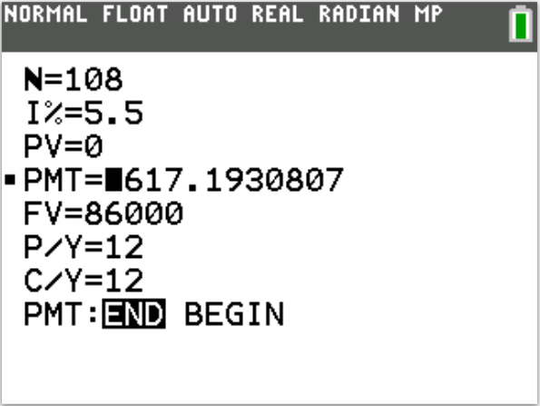
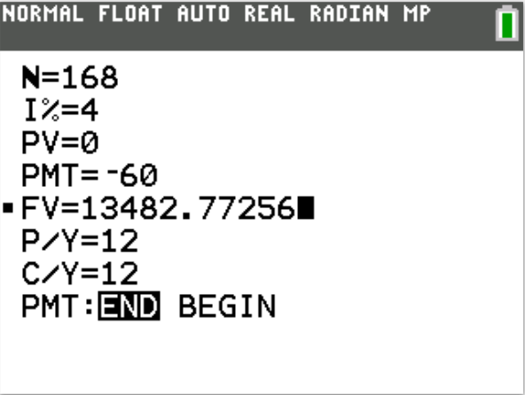
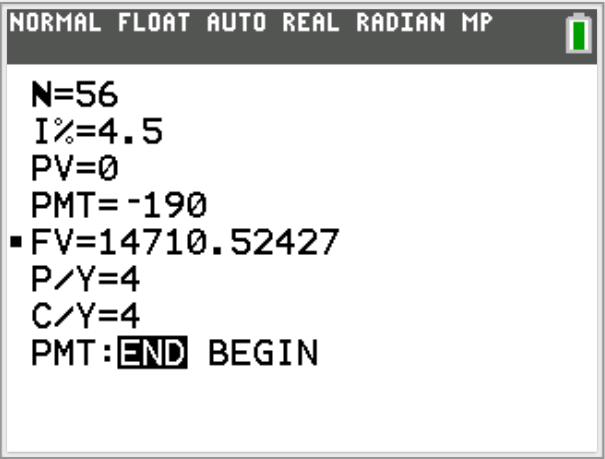

Solved Examples on Future Value of Ordinary Annuity and Sinking Funds
Formulas Used: Mathematics of Finance NOTE: Unless instructed otherwise;
For all financial calculations, do not round until the final answer.
Do not round intermediate calculations. If it is too long, write it to "at least" $5$ decimal places.
Round your final answer to $2$ decimal places.
Make sure you include your unit.
Solve all questions.
Use at least two methods where applicable.
Write the name of any formulas that you use.
Show all work.
For NSC Students For the Questions:
Any space included in a number indicates a comma used to separate digits...separating multiples of three digits
from
behind.
Any comma included in a number indicates a decimal point. For the Solutions:
Decimals are used appropriately rather than commas
Commas are used to separate digits appropriately.
(1.) Determine the savings plan balance after 3 years with an APR of 4% and monthly payments of
$300
This is a case of the Future Value of Ordinary Annuity
(3.) In the savings plan formula below (one of the formulas for the Future Value of Ordinary Annuity),
$$
FV = PMT * \dfrac{\left[\left(1 + \dfrac{r}{m}\right)^{mt} - 1\right]}{\dfrac{r}{m}}
$$
Assuming all other variables are constant, what happens to the accumulated balance in the savings
account?
A. It decreases as t increases.
As the exponent, m in the numerator increases, t must decrease to keep the formula true.
B. It increases as m increases.
As m increases, the demoninator decreases and the exponent in the numerator increases.
This makes the accumulated balance increase.
C. It increases as m increases.
If less payments are made per year, more money will be saved.
D. It decreases as t increases.
As the amount of years of saving increases, the accumulated savings decrease.
E. It increases as r decreases.
As m increases, r over m decreases causing the accumulated balance the increase.
F. It increases as r decreases.
As r decreases, the amount of interest paid will be less.
Therefore, more accumulated savings will be made.
The answer is B.
It increases as m increases.
As m increases, the demoninator decreases and the exponent in the numerator increases.
This makes the accumulated balance increase.
Student: How do you know? May you explain? Teacher: Sure.
Let us look at these three cases:
(4.) Distinguish between the total return and the annual return on an investment.
How do you calculate the annual return?
A. The total return is the percentage change in the investment value.
The annual return is the annual percentage yield (APY) that would give the same overall growth over
t years.
The formula is: $Annual\;\;Return = \left(\dfrac{A}{P}\right)^{\dfrac{1}{t}} - 1$
B. The annual return is the percentage change in the investment value.
The total return is the annual percentage yield (APY) that would give the same overall growth over
t years.
The formula is: $Annual\;\;Return = \left(\dfrac{A}{P}\right)^{\dfrac{1}{t}} - 1$
C. The total return is the percentage change in the investment value.
The annual return is the annual percentage yield (APY) that would give the same overall growth over
t years.
The formula is: $Annual\;\;Return = \dfrac{A - P}{P} * 100\%$
A. The total return is the percentage change in the investment value.
The annual return is the annual percentage yield (APY) that would give the same overall growth over
t years.
The formula is: $Annual\;\;Return = \left(\dfrac{A}{P}\right)^{\dfrac{1}{t}} - 1$
(5.) Deborah's goal is to create a college fund for her son.
She found a fund that offers an APR of 5%.
How much should she deposit monthly to accumulate $88,000 in 12 years?
This is a case of Sinking Fund
$
r = 5\% = \dfrac{5}{100} = 0.05 \\[5ex]
Monthly\;\;deposits \rightarrow Compounded\:\:monthly \rightarrow m = 12 \\[3ex]
FV = \$88000 \\[3ex]
t = 12\;years \\[3ex]
PMT = \dfrac{r * FV}{m * \left[\left(1 + \dfrac{r}{m}\right)^{mt} - 1\right]} \\[9ex]
= \dfrac{0.05 * 88000}{12 * \left[\left(1 + \dfrac{0.05}{12}\right)^{12 * 12} - 1\right]} \\[9ex]
= \dfrac{4400}{12 * \left[(1 + 0.0041666667)^{144} - 1\right]} \\[5ex]
= \dfrac{4400}{12 * \left[(1.0041666667)^{144} - 1\right]} \\[5ex]
= \dfrac{4400}{12 * (1.819848874 - 1)} \\[5ex]
= \dfrac{4400}{12 * 0.8198488741} \\[5ex]
= \dfrac{4400}{9.838186489} \\[5ex]
= 447.2368973 \\[3ex]
\approx \$447.24 \\[3ex]
$
Ceteris paribus, Rita should deposit about $447.24 in the fund to accumulate
$88,000 in 12 years.
(6.) Calculate the future value of a $300 per week ordinary annuity at 4.5% per year
compounded weekly
for $8\dfrac{1}{2}$ years.
This is a case of the Future Value of Ordinary Annuity
$
\underline{Future\:\:Value\:\:of\:\:Ordinary\:\:Annuity} \\[3ex]
PMT = \$300 \\[3ex]
r = 4.5\% = \dfrac{4.5}{100} = 0.045 \\[5ex]
Compounded\:\:weekly \rightarrow m = 52 \\[3ex]
t = 8\dfrac{1}{2}\:years = 8.5\:years \\[5ex]
FV = ? \\[3ex]
FV = m * PMT * \left[\dfrac{\left(1 + \dfrac{r}{m}\right)^{mt} - 1}{r}\right] \\[10ex]
FV = 52 * 300 * \left[\dfrac{\left(1 + \dfrac{0.045}{52}\right)^{52 * 8.5} - 1}{0.045}\right]
\\[10ex]
= 15600 * \left[\dfrac{\left(1 + 0.000865384615\right)^{442} - 1}{0.045}\right] \\[10ex]
= 15600 * \left[\dfrac{\left(1.000865384615\right)^{442} - 1}{0.045}\right] \\[7ex]
= 15600 * \left[\dfrac{1.46570241 - 1}{0.045}\right] \\[5ex]
= 15600 * \left[\dfrac{0.46570241}{0.045}\right] \\[5ex]
= \dfrac{15600 * 0.46570241}{0.045} \\[5ex]
= \dfrac{7264.9576}{0.045} \\[5ex]
= 161443.502 \\[3ex]
FV \approx \$161,443.50 \\[3ex]
$
Ceteris paribus, the future value of a $300 per week ordinary annuity at 4.5% per year
compounded weekly
for $8\dfrac{1}{2}$ years is about $161,443.50
(7.) Consider the pair of savings plans below.
Hannah deposits $60 per month in an account with an APR of 4%, while Sarah deposits
$190 per quarter in an account with an APR of 4.5%.
Assume that the compounding and payment periods are the same for each pair.
(I.) Compare the balances in each plan after 14 years.
(II.) Which person deposited more money in the plan?
(III.) Which of the two investment strategies is better?
(I.) This is a case of the Future Value of Ordinary Annuity
(III.) Sarah's investment strategy is better because she deposited more and had a higher APR.
(8.) Suppose you deposited $80 per month into a savings plan for 7 years and at the
end of that period your balance was $19,500.
What was the amount you earned in interest?
A. It was $12,780. Calculate the amount deposited over years and then
subtract it from the balance of $19,500.
B. It is impossible to compute without knowing the APR. To find the correct answer,
multiply each $80 deposit by the APR, and then multiply the product by the number
of months in 7 years.
C. It is impossible to compute without knowing the APR.
To find the correct answer, divide the number of payments by the APR.
D. It was $25,560. Multiply the balance of $19,500 by the number
of years, 7.
E. It was $25,560. Calculate the amount deposited over 7 years and then add
it to the balance of $19,500.
F. It was $12,780. Divide the balance of $19,500 by the number
of years, 7.
$
PMT = \$80 \\[3ex]
m = 12 \\[3ex]
t = 7\;years \\[3ex]
FV = \$19500 \\[5ex]
Total\:\:PMTs = PMT * m * t \\[3ex]
= 80 * 12 * 7 \\[3ex]
= \$6720 \\[3ex]
CI = FV - Total\:\:PMTs \\[3ex]
= 19500 - 6720 \\[3ex]
= \$12,780 \\[3ex]
$
The correct answer is Option A.
(9.) Phoebe's goal is to create a college fund for her child.
She found a fund that offers an APR of 6%.
How much should she deposit monthly to accumulate $89000 in 13 years?
This is a case of Sinking Fund
$
r = 6\% = \dfrac{6}{100} = 0.06 \\[5ex]
Monthly\;\;deposits \rightarrow Compounded\:\:monthly \rightarrow m = 12 \\[3ex]
FV = \$89000 \\[3ex]
t = 13\;years \\[3ex]
PMT = \dfrac{r * FV}{m * \left[\left(1 + \dfrac{r}{m}\right)^{mt} - 1\right]} \\[9ex]
= \dfrac{0.06 * 89000}{12 * \left[\left(1 + \dfrac{0.06}{12}\right)^{12 * 13} - 1\right]} \\[9ex]
= \dfrac{5340}{12 * \left[(1 + 0.005)^{156} - 1\right]} \\[5ex]
= \dfrac{5340}{12 * \left[(1.005)^{156} - 1\right]} \\[5ex]
= \dfrac{5340}{12 * (2.177236639 - 1)} \\[5ex]
= \dfrac{5340}{12 * 1.177236639} \\[5ex]
= \dfrac{5340}{14.12683966} \\[5ex]
= 378.0038655 \\[3ex]
\approx \$378.00 \\[3ex]
$
Phoebe should deposit about $378.00 in the college fund to have
$89000 in 13 years.
(10.) At age 43, Augustine started saving for retirement.
If his investment plan pays an APR of 6% and he wants to have $0.8 million when he retires
in 22 years, how much should he deposit monthly?
This is a case of Sinking Fund
$
r = 6\% = \dfrac{6}{100} = 0.06 \\[5ex]
Monthly\;\;deposits \rightarrow Compounded\:\:monthly \rightarrow m = 12 \\[3ex]
FV = \$0.8\;million = \$800,000 \\[3ex]
t = 22\;years \\[3ex]
PMT = \dfrac{r * FV}{m * \left[\left(1 + \dfrac{r}{m}\right)^{mt} - 1\right]} \\[9ex]
= \dfrac{0.06 * 800000}{12 * \left[\left(1 + \dfrac{0.06}{12}\right)^{12 * 22} - 1\right]} \\[9ex]
= \dfrac{48000}{12 * \left[(1 + 0.005)^{264} - 1\right]} \\[5ex]
= \dfrac{48000}{12 * \left[(1.005)^{264} - 1\right]} \\[5ex]
= \dfrac{48000}{12 * (3.731129336 - 1)} \\[5ex]
= \dfrac{48000}{12 * 2.731129336} \\[5ex]
= \dfrac{48000}{32.77355203} \\[5ex]
= 1464.595597 \\[3ex]
\approx \$1464.60 \\[3ex]
$
Augustine should deposit about $1464.60 in the investment plan to have
$0.8 million in 22 years.
(11.)
(12.)
(13.) Luke decided to begin saving for retirement at the age of 32.
He decided to deposit $70 at the end of each month in an IRA (Individual Retirement
Account) that pays 5% compounded monthly.
(a.) If he retires at 65 years of age, how much will he have in the IRA account?
(b.) Calculate the interest.
This is a case of the Future Value of Ordinary Annuity
(14.) Perpetua works for an investment company, Company $A$ with which she earned a sum of
$180,000 in
her retirement account.
She just got a position with another company, Company $B$. She intends to roll over her funds to
a
new account with her new company.
She also plans to deposit $2000 per quarter into the new account until she retires 2% years
from now.
Assume the new account earns interest at the rate of 3.5% per year compounded quarterly, how much will
she
have in her account when she retires?
This is a case of the Compound Interest and Future Value of Ordinary Annuity
(15.) Between the ages of 22 and 28, Rita contributed $7000 per year in a 401(k) and her
employer contributed $3500 per year (matched it 50%) on her behalf.
The interest rate is 8.6% compounded annually.
(a.) What is the value of the 401(k) at the end of the 6 years?
After 6 years of working for this firm, she moved on to a new job.
However, she kept her accumulated retirement funds in the 401(k).
(b.) How much money will she have in the plan when she retires at 65 years?
(c.) How much did she contribute to the 401(k) plan?
(d.) How much did her employer contribute to the plan?
(e.) What is the difference between the amount of money she accumulated in the 401(k)
and the amount she contributed to the plan?
This is a case of the Future Value of Ordinary Annuity and Compound Interest
$
(a.) \\[3ex]
\underline{Future\:\:Value\:\:of\:\:Ordinary\:\:Annuity} \\[3ex]
PMT = \$7000 + \$3500 = \$10500...matched\:\:50\% \\[3ex]
r = 8.6\% = \dfrac{8.6}{100} = 0.086 \\[5ex]
Compounded\:\:annually \rightarrow m = 1 \\[3ex]
t = 28\:years - 22\:years = 6\:years \\[3ex]
FV = ? \\[3ex]
FV = m * PMT * \left[\dfrac{\left(1 + \dfrac{r}{m}\right)^{mt} - 1}{r}\right] \\[10ex]
FV = 1 * 10500 * \left[\dfrac{\left(1 + \dfrac{0.086}{1}\right)^{1 * 6} - 1}{0.086}\right] \\[10ex]
= 10500 * \left[\dfrac{\left(1 + 0.086\right)^{6} - 1}{0.086}\right] \\[10ex]
= 10500 * \left[\dfrac{\left(1.086\right)^{6} - 1}{0.086}\right] \\[7ex]
= 10500 * \left[\dfrac{1.6405102624 - 1}{0.086}\right] \\[5ex]
= 10500 * \left[\dfrac{0.6405102624}{0.086}\right] \\[5ex]
= \dfrac{10500 * 0.6405102624}{0.086} \\[5ex]
= \dfrac{6725.357755}{0.086} \\[5ex]
= 78201.83437 \\[3ex]
FV \approx \$78,201.83 \\[3ex]
$
(b.)
The money was left in the $401(k)$ from the age of $28$ years until $65$ years.
No periodic deposits were made during that period $(65 - 28 = 37 years)$.
However, the money earned interest.
It was not withdrawn even when she found a new job.
That money, the Future Value of $78201.83$ was still being compounded annually at $8.6\%$ interest
rate.
So, we have to use the Compound Interest Formula.
$
\underline{Compound\:\:Interest} \\[3ex]
P = \$78201.83437 \\[3ex]
r = 8.6\% = \dfrac{8.6}{100} = 0.086 \\[5ex]
Compounded\:\:annually \rightarrow m = 1 \\[3ex]
t = 65\:years - 28\:years = 37\:years \\[3ex]
A = ? \\[3ex]
A = P\left(1 + \dfrac{r}{m}\right)^{mt} \\[7ex]
A = 78201.83437 * \left(1 + \dfrac{0.086}{1}\right)^{1 * 37} \\[7ex]
= 78201.83437 * \left(1 + 0.086\right)^{37} \\[5ex]
= 78201.83437 * \left(1.086\right)^{37} \\[5ex]
= 78201.83437 * 21.16915556 \\[3ex]
= 1655466.797 \\[3ex]
A \approx \$1,655,466.80 \\[3ex]
$
(c.)
Amount contributed to $401(k)$ plan
$
Amount \\[3ex]
= 7000 * 6 \\[3ex]
= \$42,000.00 \\[3ex]
$
(d.)
Amount her employer contributed to the $401(k)$ plan
$
Amount \\[3ex]
= 3500 * 6 \\[3ex]
= \$21,000.00 \\[3ex]
$
(e.)
The difference between the amount of money she would have accumulated in the $401(k)$ and the amount
she
contributed to the plan
(16.) Between the ages of 25 and 40, Lucy contributed $5000 per year in a 401(k) and her
employer matched this contribution dollar for dollar.
The interest rate is 7.5% compounded annually.
(a.) What is the value of the 401(k) at the end of the 15 years?
After 15 years of working for this firm, she moved on to a new job.
However, she kept her accumulated retirement funds in the 401(k).
(b.) How much money will she have in the plan when she retires at 60 years?
(c.) How much did she contribute to the 401(k) plan?
(d.) How much did her employer contribute to the plan?
(e.) What is the difference between the amount of money she accumulated in the 401(k)
and the amount she contributed to the plan?
This is a case of the Future Value of Ordinary Annuity and Compound Interest
$
(a.) \\[3ex]
\underline{Future\:\:Value\:\:of\:\:Ordinary\:\:Annuity} \\[3ex]
PMT = \$5000 + \$5000 = \$10000...matched\:\:dollar\:\:for\:\:dollar \\[3ex]
r = 7.5\% = \dfrac{7.5}{100} = 0.075 \\[5ex]
Compounded\:\:annually \rightarrow m = 1 \\[3ex]
t = 40\:years - 25\:years = 15\:years \\[3ex]
FV = ? \\[3ex]
FV = m * PMT * \left[\dfrac{\left(1 + \dfrac{r}{m}\right)^{mt} - 1}{r}\right] \\[10ex]
FV = 1 * 10000 * \left[\dfrac{\left(1 + \dfrac{0.075}{1}\right)^{1 * 15} - 1}{0.075}\right] \\[10ex]
= 10000 * \left[\dfrac{\left(1 + 0.075\right)^{15} - 1}{0.075}\right] \\[10ex]
= 10000 * \left[\dfrac{\left(1.075\right)^{15} - 1}{0.075}\right] \\[7ex]
= 10000 * \left[\dfrac{2.958877353 - 1}{0.075}\right] \\[5ex]
= 10000 * \left[\dfrac{1.958877353}{0.075}\right] \\[5ex]
= \dfrac{10000 * 1.958877353}{0.075} \\[5ex]
= \dfrac{19588.77353}{0.075} \\[5ex]
= 261183.647 \\[3ex]
FV \approx \$261,183.65 \\[3ex]
$
(b.)
The money was left in the 401(k) from the age of 40 years until 60 years.
No periodic deposits were made during that period (60 − 40 = 20 years).
However, the money earned interest.
It was not withdrawn even when she found a new job.
That money, the Future Value of $261,183.65$ was still being compounded annually at 7.5% interest
rate.
So, we have to use the Compound Interest Formula.
$
\underline{Compound\:\:Interest} \\[3ex]
P = \$261183.647 \\[3ex]
r = 7.5\% = \dfrac{7.5}{100} = 0.075 \\[5ex]
Compounded\:\:annually \rightarrow m = 1 \\[3ex]
t = 60\:years - 40\:years = 20\:years \\[3ex]
A = ? \\[3ex]
A = P\left(1 + \dfrac{r}{m}\right)^{mt} \\[7ex]
A = 261183.647 * \left(1 + \dfrac{0.075}{1}\right)^{1 * 20} \\[7ex]
= 261183.647 * \left(1 + 0.075\right)^{20} \\[5ex]
= 261183.647 * \left(1.075\right)^{20} \\[5ex]
= 261183.647 * 4.2478511 \\[3ex]
= 1109469.242 \\[3ex]
A \approx \$1,109,469.24 \\[3ex]
$
(c.)
Amount contributed to 401(k) plan
$
Amount \\[3ex]
= 5000 * 15 \\[3ex]
= \$75,000.00 \\[3ex]
$
(d.)
Amount her employer contributed to the $401(k)$ plan
$
Amount \\[3ex]
= 5000 * 15 \\[3ex]
= \$75,000.00 \\[3ex]
$
(e.)
The difference between the amount of money she would have accumulated in the $401(k)$ and the amount
she contributed to the plan
(17.) James contributed $6000 per year into a Traditional IRA (Traditional Individual
Retirement Account)
earning interest at the rate of 5% per year compounded annually, every year after age 35 until his
retirement at age 65.
John contributed $5000 per year into a Roth IRA (Roth Individual Retirement Account)
earning interest at the
rate of 5% per year compounded annually for a period of 30 years.
The investments of James and John are in a marginal tax bracket of 25% at the time of their retirement.
They both wish to withdraw all of the money in their IRAs at retirement.
(a.) After all due taxes are paid, who will have the higher take-home amount?
(b.) How much higher is that amount?
This is a case of the Future Value of Ordinary Annuity
(18.) Daniel intends to deposit a sum of $8000 into a bank account at the beginning of next
month.
He also intends to deposit a sum of $225 per month into the same account at the end of that
month and at the end
of each subsequent month for the next 4 years.
If the bank pays interest at a rate of 3% per year compounded annually, how much will he have in his
account at the end of
4 years asssuming he makes no withdrawals during that period?
This is a case of Compound Interest and the Future Value of Ordinary Annuity
(19.) Use only technology (no formulas), preferably the TVM app in the TI-series calculators to solve
these questions.
Show the screenshots of your solutions.
Interpret your answers in the context of the question.
(I.) You want to purchase a new car in 9 years and expect the car to cost $86,000.
Your bank offers a plan with a guaranteed APR of 5.5% if you make regular monthly deposits.
How much should you deposit each month to end up with $86,000 in 9 years?
(II.) Consider the pair of savings plans below.
Hannah deposits $60 per month in an account with an APR of 4%, while Sarah deposits
$190 per quarter in an account with an APR of 4.5%.
Compare the balances in each plan after 14 years.
(I.) This is a case of Sinking Funds
$N = mt = 12 * 9 = 108$

You should invest $617.19 each month.
(II.) This is a case of Future Value of Ordinary Annuity
Hannah: $N = mt = 12 * 14 = 168$

The balance in Hannah's account is $13482.77
Sarah: $N = mt = 4 * 14 = 56$
P/Y = 4
C/Y = m = 4

The balance in Sarah's account is $14710.52
(20.) Choose the best answer to the following question.
Explain your reasoning.
What is the total return on a 28-year investment?
A. It is the value of the investment after 28 years.
The total return is equal to the overall growth over t years.
B. It is the difference between the final and initial values of the investment.
The initial value is how much was invested and the final value is equal to the initial value plus the
total return.
C. It is the relative change in the value of the investment.
The total return shows the percentage change as the value of the investment changes.
D. It is the value of the investment after 28 years.
Time is the only factor that affects total return.
As the length of time of the investment increases, the total return increases.
E. It is the difference between the final and initial values of the investment.
This shows how much money was made from the initial investment after 28 years.
F. It is the relative change in the value of the investment.
Then, subtract one from this value to determine the annual return.
C. It is the relative change in the value of the investment.
The total return shows the percentage change as the value of the investment changes.
(21.) Suppose you are 30 years old and would like to retire at age 60.
Furthermore, you would like to have a retirement fund from which you can draw an income of
$125,000 per year forever!
(a.) To draw $125,000 per year, how much should be in your savings account when you
retire?
(b.) How much would you need to deposit each month to do this?
Assume a constant APR of 8% and that the compounding and payment periods are the same.
(a.) To draw an income of $125,000 per year implies that the interest should be
$125,000 per year
At an APR of 8%, let us calculate the amount needed to have in the retirement fund
Interest = Rate * Amount
Rate * Amount = Intereest
8% * Amount = $125,000
0.08 * Amount = 125000
Amount = 125000 ÷ 0.08
Amount = 1562500
To draw $125,000 per year, $1,562,500 should be in your savings account
when you retire.
This is the Future Value.
(22.) At age 18, Jude set up an IRA (individual retirement account) with an APR of 4%.
At the end of each month he deposits $100 in the account.
(a.) How much will the IRA contain when he retires at age 65?
(b.) Compare that amount to the total deposits made over the time period.
This is a case of the Future Value of Ordinary Annuity
(24.) Decide whether these statements make sense (or is clearly true) or does not make sense (or is
clearly false).
Explain your reasoning.
(I.) If interest rates stay at 5% APR and Person A continues to make my monthly $50
deposits into my retirement plan, Person A should have at least $30,000 saved when the
person retires in 25 years.
(II.) I'm putting all my savings into stocks because stocks always outperform other types of investments
over the long term.
(III.) I bought a fund advertised on the web that says it uses a secret investment strategy to get an
annual return twice that of stocks, with no risk at all.
(IV.) My financial advisor showed me that I could reach my retirement goal with deposits of
$245 per month and an average return of 4%.
But I don't want to deposit that much of my paycheck, so I'm going to reach the same goal by getting
an average annual return of 9% instead.
(V.) I'm hoping to withdraw money to buy my first house soon, so I need to put it into an investment
that is fairly liquid.
(I.) This is a case of the Future Value of Ordinary Annuity
$
PMT = \$50 \\[3ex]
r = 5\% = \dfrac{5}{100} = 0.05 \\[5ex]
Monthly\;\;deposits \rightarrow Compounded\:\:monthly \rightarrow m = 12 \\[3ex]
t = 25\:years \\[3ex]
FV = ? \\[3ex]
FV = m * PMT * \left[\dfrac{\left(1 + \dfrac{r}{m}\right)^{mt} - 1}{r}\right] \\[10ex]
FV = 12 * 50 * \left[\dfrac{\left(1 + \dfrac{0.05}{12}\right)^{12 * 25} - 1}{0.05}\right] \\[10ex]
= 600 * \left[\dfrac{\left(1 + 0.0041666667\right)^{300} - 1}{0.05}\right] \\[10ex]
= 600 * \left[\dfrac{\left(1.004166667\right)^{300} - 1}{0.05}\right] \\[7ex]
= 600 * \left[\dfrac{3.481290452 - 1}{0.05}\right] \\[5ex]
= 600 * \left[\dfrac{2.481290452}{0.05}\right] \\[5ex]
= \dfrac{600 * 2.481290452}{0.05} \\[5ex]
= \dfrac{1488.774271}{0.05} \\[5ex]
= 29775.48542 \\[3ex]
FV \approx \$29775.49 \\[3ex]
$
The statement does not make sense because the person will have $29775.49 in the
retirement account when the person retires in 25 years.
(II.) The statement does not make sense because although stocks historically outperform bonds and
cash over the long term, investing in stocks is high-risk and there is no guarantee that the
investment will yield a high return.
(III.) The statement does not make sense because investing in stocks is high-risk to get high
returns, thus getting higher returns than stocks with this secret strategy must mean the fund
advertised on the web is high-risk, not no risk.
(IV.) This does not make sense because you cannot choose your own annual rate of return.
(V.) It makes sense, because ease of access to cash is important if it is needed soon.